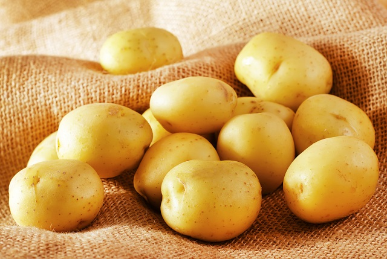

Batata seu lar
Cálcio, Magnésio, Ferro e Fósforo – todos elementos muito presentes na batata – fortalecem os ossos e impedem que eles fiquem quebradiços. São salutares para a terceira idade. O potássio presente na batata também equilibra a pressão arterial e combate a hipertensão